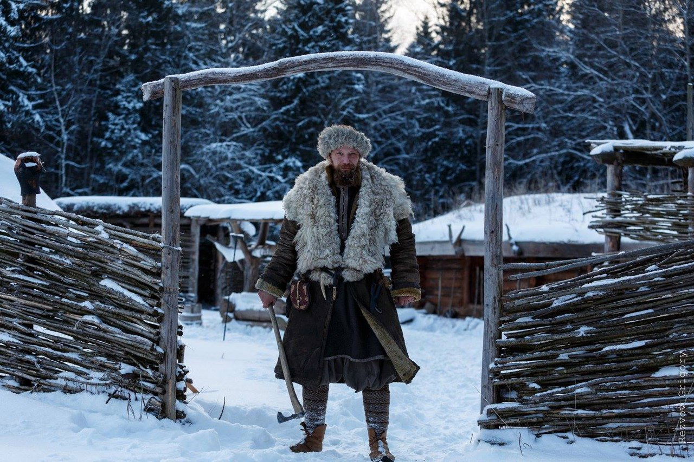

Привет! сегодня вторник, день 2! ;)
ссылка
Контакты
Ратоборцы. Погружение.

Испытайте себя в условиях Средневековья — приезжайте на Буянов двор, древнерусский хутор на опушке леса. Суровые обитатели двора облачат вас в средневековые одёжи, выдадут оружие и снаряжение, накормят и обучат.
Позиционирование относительное
Кем быть — решайте сами
Станьте дружинником, стрельцом, ремесленником или следопытом. На хуторе и в лесном лагере вас ждут тренировки с мечами и бердышами, мушкетами и пушками, манёвры, походы, обучение ремеслам и навыкам выживания.
Что вас ждёт?
Дружинник
Дружинник
Вступайте в княжью дружину. Могучие гридни научат вас орудовать копьем, мечом, топором и щитом, стрелять из лука и метать дротики-сулицы. Вы будете держать строй щитов и сметать им противника. Вечером ждёт суровое испытание — оно покажет, как вы усвоили воинскую премудрость.
Предлагайте занятия, которые вам интересны — например, подробный рассказ о дружинной культуре и оружии.
Время: 8 часов
Количество участников: до 6 человек
стоимость: 10 000 р. с человека.
Стрелец
Окунитесь в лихой XVII век, присоединяйтесь к стрелецкому полку! Надевайте кафтан и обвешивайтесь пороховницами — вас научат огневому бою из мушкета и пушки. Бывалый стрелец покажет, как работать в строю бердышом, пикой и саблей. После обеда вас ждёт отливка пуль и помол пороха. Вечером закрепите умения на военных маневрах.
Время: 8 часов
Количество участников: до 6 человек
Стоимость: 10 000 р. с человека
Ремесло на Буяновом Дворе
Облачайтесь в порты и рубахи, надевайте кожаный фартук, и вперёд! Наши плотники построили не один хутор, с ними советуются и ученые. Мастера научат вас
тесать, рубить чаши, колоть по волокнам брёвна, корить скобелем и стругом, пилить лучковой пилой, сверлить ложковидными сверлами, определять породы деревьев, видеть их сильные и слабые стороны.
Время: 8 часов
Количество участников: до 6 человек
Стоимость: 10 000 р. с человека
<Исторический поход «Промысловик» (Х век/ XVII век)/h3>
Станьте промысловиком под руководством матёрого следопыта. В округе водятся лоси, кабаны, медведи, бобры, а речка знаменита хариусом. В лесном лагере охотники покажут, как строить шалаш, как ставить силки и сети, разжигать костер кресалом, бить рыбу острогой. Что поймаете — сварите тут же в похлёбке по старинному рецепту.
Время: 36 часов.
Количество участников: до 6 человек
Стоимость: 15 000 р. с человека
Буянов двор
Средневековый хутор наполнен вещами, дышащими стариной. Все строения здесь — копии зданий северной Руси X в. Это тот самый хутор, где прожил полгода герой «Одного в прошлом». Его перевезли на живописную поляну вдали от шума цивилизации.
Расположение: Московская область, Клинский район, д. Попелково.
Вас ждут:
— Древнерусский хутор, построенный на основании археологических находок X века.
— Личный проводник в прошлое, который научит пользоваться аутентичными предметами.
— Полный костюм выбранной эпохи и статуса: обувь, нижняя и верхняя одежда, шапка, аксессуары. Облачение подберут по вашему размеру и подгонят.
— Обед из историчных блюд, приготовленных на огне. Сопровождается экскурсом в средневековую кулинарию.
Баня
На хуторе можно попариться в баньке. Разумеется, «по-чёрному», ведь вы в Древней Руси! Топите печь-каменку, вдыхайте ароматы бревенчатых стен и душистых трав, хлещитесь дубовыми вениками, как предки завещали. Дым и жар выгонят всю хворь!
Дополнительные услуги
Доставка на место
Если лень вести машину или ехать на электричке — доставим вас на «Буянов двор» сами.
Фотосессия
Фотограф-профессионал запечатлеет вас в образе. В течение недели он предоставит серию обработанных фотографий
Переводчик
Иностранцы — желанные гости! Для них выпишем толмача из посольского приказа.
Лошадь с инструктором
Умеете ездить верхом и желаете в конный поход? Средневековый всадник проведёт вас по захватывающему маршруту.
Мастер-классы под заказ
Ваша группа больше шести человек? Не нашлось занятия по душе? Хотите что-то изменить в программе? Предлагайте, мы всё устроим!